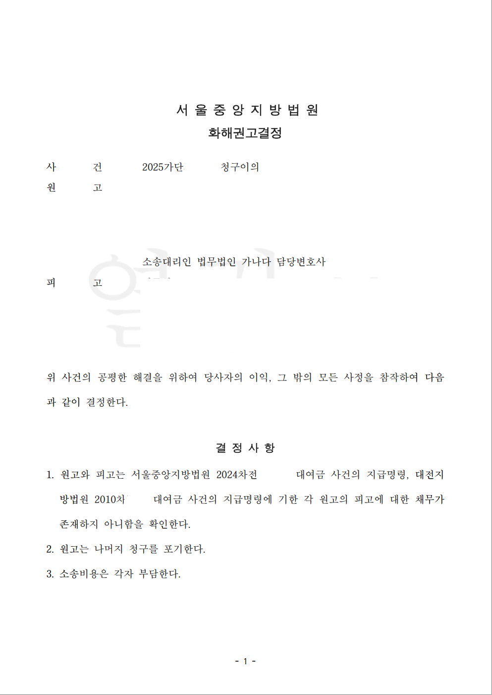

의뢰인은 과거 한 회사에서 근무하면서 일정 기간 형식상 대표자로 등기되어 있었습니다. 의뢰인이 퇴사한 뒤 회사의 채권자는 의뢰인까지 채무자로 포함해 지급명령을 신청했고, 의뢰인은 회사의 말만 믿고 지급명령을 방치했습니다. 그 지급명령은 그대로 확정되었습니다.
문제는 시간이 한참 지난 뒤 다시 발생했습니다. 상대방은 같은 채권관계를 이유로 2024년에 다시 지급명령을 신청했고, 의뢰인은 이의신청 기간을 놓쳤습니다. 결국 과거 지급명령과 2024년 지급명령이 모두 확정된 상태가 되었습니다.
신한솔 변호사는 확정된 지급명령의 집행력을 다투기 위해 청구이의의 소를 제기했습니다. 소장 부본이 상대방에게 송달되자, 상대방은 2024년에 다시 신청한 지급명령에는 문제가 있었다며 취하하겠다는 취지로 연락해 왔습니다.
겉으로 보면 사건이 쉽게 끝난 것처럼 보일 수 있습니다. 그러나 이미 확정된 지급명령은 단순히 취하하겠다는 말로 없어지지 않습니다. 상대방이 선의로 잘못을 인정하더라도, 그 의사만 믿고 사건을 종결하면 의뢰인에게 남아 있는 집행권원을 소멸시키지 못할 수 있습니다.
더구나 이 사건에서는 2024년 지급명령만 정리해서도 충분하지 않았습니다. 2024년 지급명령은 과거에 이미 확정된 지급명령과 같은 채권관계에서 나온 것이었기 때문입니다.
이 사건에서 필요한 것은 단순한 취하가 아니었습니다. 상대방의 의사를 재판상 효력 있는 형태로 남기고, 새로 확정된 지급명령뿐 아니라 과거에 확정되어 있던 지급명령까지 함께 정리해야 했습니다.
신한솔 변호사는 상대방에게 이미 확정된 지급명령은 단순 취하로 해결되지 않고, 청구이의 사건 안에서 재판상 효력 있는 방식으로 정리해야 한다고 설명했습니다. 상대방이 제안에 동의하자, 법원에 두 지급명령의 집행력 배제를 함께 구하는 화해권고결정요청서를 제출했습니다.
이 사건에서는 변론기일이 잡히고 재판이 진행되기를 기다릴 이유가 크지 않았습니다. 상대방이 이미 최근 지급명령 신청의 문제를 인정하고 있었기 때문입니다.
다만 그 인정을 말로만 남겨서는 안 됐습니다. 의뢰인에게 실제로 안전한 결과를 만들려면 법원의 결정으로 정리해야 했습니다. 또한 청구이의의 소 제기만으로 강제집행이 자동 정지되는 것은 아니므로, 사건을 오래 끌수록 의뢰인의 불안과 위험은 커질 수 있었습니다.
그래서 신한솔 변호사는 기일을 기다리지 않고, 상대방의 동의를 확보한 뒤 2024년 지급명령과 과거 지급명령을 모두 포함한 화해권고결정요청서를 먼저 제출했습니다.
법원은 신한솔 변호사가 제출한 화해권고결정요청서의 취지를 반영하여, 두 지급명령에 기한 의뢰인의 채무가 존재하지 않음을 확인하는 화해권고결정을 내렸습니다. 화해권고결정은 쌍방의 이의 없이 확정되었습니다.
그 결과 의뢰인은 최근 지급명령 하나만 정리한 것이 아니라, 그 기초가 된 과거 지급명령까지 함께 정리할 수 있었습니다. 같은 채권관계에서 나온 두 개의 집행권원에 따른 강제집행 위험을 한 번에 해소한 것입니다.
청구이의 사건에서는 지금 눈앞에 보이는 집행권원만 보아서는 부족할 수 있습니다. 그 집행권원이 어떤 과거 채권관계와 연결되어 있는지, 같은 뿌리에서 나온 다른 지급명령이나 판결이 남아 있지는 않은지까지 확인해야 합니다.
개인정보와 사건번호 일부를 비식별 처리한 사건 결과 문서 일부입니다. 본 사례는 의뢰인 보호를 위해 필요한 범위에서만 내용을 공개합니다.

확정된 지급명령·청구이의·강제집행 위험으로 고민하고 계십니까.
신한솔 변호사가 직접 기록과 집행위험의 구조를 검토합니다.
변호사 논평
상대방이 “취하하겠다”고 말하더라도 이미 확정된 지급명령은 그 말만으로 사라지지 않습니다. 이 사건은 상대방의 인정 의사를 말로 두지 않고 재판상 효력 있는 화해권고결정으로 굳혔고, 최근 지급명령뿐 아니라 과거 지급명령까지 함께 정리하여 실제 집행위험을 줄인 사례입니다.